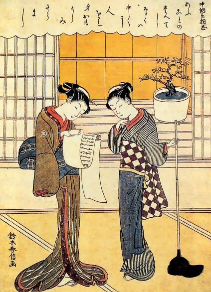

|
The Vietnamese German University JAPANESE WOMEN POETS IN THE HEIAN PERIODNguyen Truong Thanh Hung |
|  Suzuki Harunobu, Two Girls, c. 1750 [1] |
|
Created by Nguyen Truong Thanh Hung, Group D1, CS_2016 CS2016_hung.ntt@student.vgu.edu.vn |
Back to top |